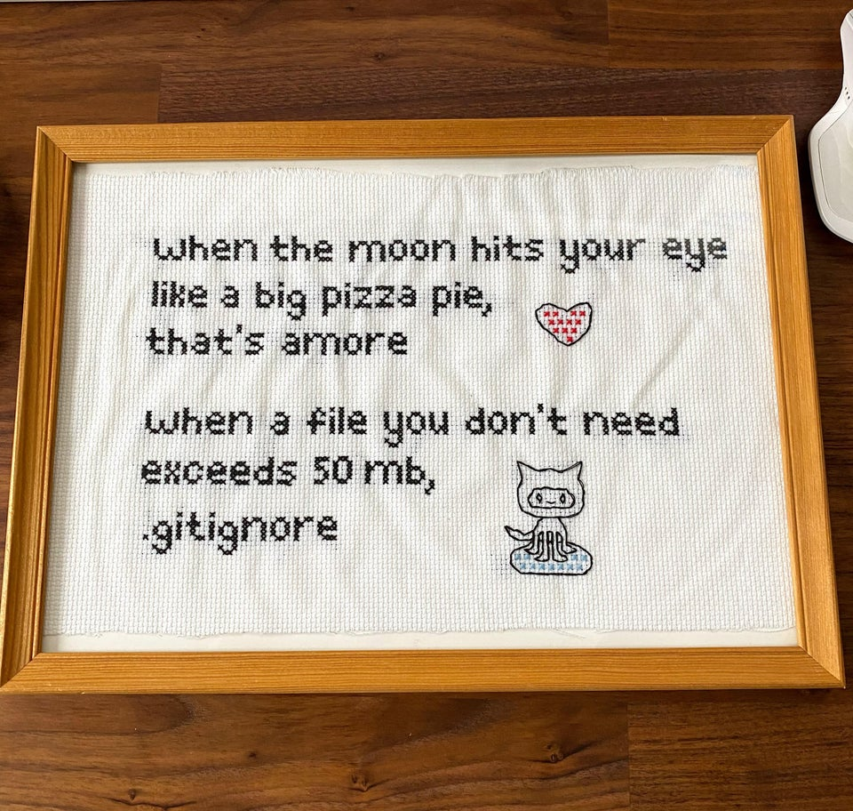
1 Getting started with remote sensing
To start with we are going to send some time exploring remotely sensed data ready for future analysis. We will first look at Sentinel and then move to Landsat data, which we have seen before in CASA0005.
You need to select a city of you choice and then using the image and explanation below…i will use Cape Town, South Africa for the rest of the practical.
1.1 Learning outcomes
By the end of this practical you should be able to:
- Source, load and articulate the differences between Landsat and Sentinel data
- Undertake basic raster image statistics and processing
- Evaluate the (dis)advantages of each type of software you have used
- Pull out and statistically compare spectral signatures
1.2 Resources
This week
-
Tempfli, K., Huurneman, Gc., Bakker, Wh., Janssen, L.L., Feringa, W., Gieske, A., Grabmaier, K., Hecker, C., Horn, J., Kerle, N., others, 2009. Principles of remote sensing: an introductory textbook. International Institute for Geo-Information Science and Earth Observation
Electromagnetic energy and remote sensing, Chapter 2
Overview of popular spaceborne sensors, Section 4.6.
-
Jensen, J.R., 2015. Introductory digital image processing: a remote sensing perspective. Prentice-Hall Inc.
- Remote Sensing and Digital Image Processing, Chapter 1, pages 1-18 and from the bottom of page 23 (Remote Sensing Data Analysis) to the end of page 27.
Brady, M., 2021. Remote Sensing for Dummies (accessed 1.4.23).
-
Butcher, G., 2016. Tour of the electromagnetic spectrum, Third edition. ed. National Aeronautics and Space Administration, Washington, DC.
Radiation budget
Reflected near-infrared waves
1.3 EO dashboard
Before we start the practical, spend 5 minutes exploring the EOdashboard website. It contains a useful overview of some of the EO data that we can and will explore later in the module.
1.4 .gitignore
If you are using Git with your project and have large data it’s best to set up a .gitignore file. This file tells git to ignore certain files so they aren’t in your local repository that is then pushed to GitHub. If you try and push large files to GitHub you will get an error and could run into lots of problems, trust me, i’ve been there. Look at my .gitignore for this repository and you will notice:
/prac_1/*
This means ignore all files within these folders, all is denoted by the *. The .gitignore has to be in your main project folder, if you have made a a git repo for your project then you should have a .gitignore so all you have to do is open it and add the folder or file paths you wish to ignore.
GitHub has a maximum file upload size of 50mb….
1.4.1 Sentinel download
Go to the Copernicus Open Access Hub
You will need to make a free account and access Copernicus Browser.
Once you have loaded the browser you first need to search for an area and example image using the VISUALIZE tab…for example…
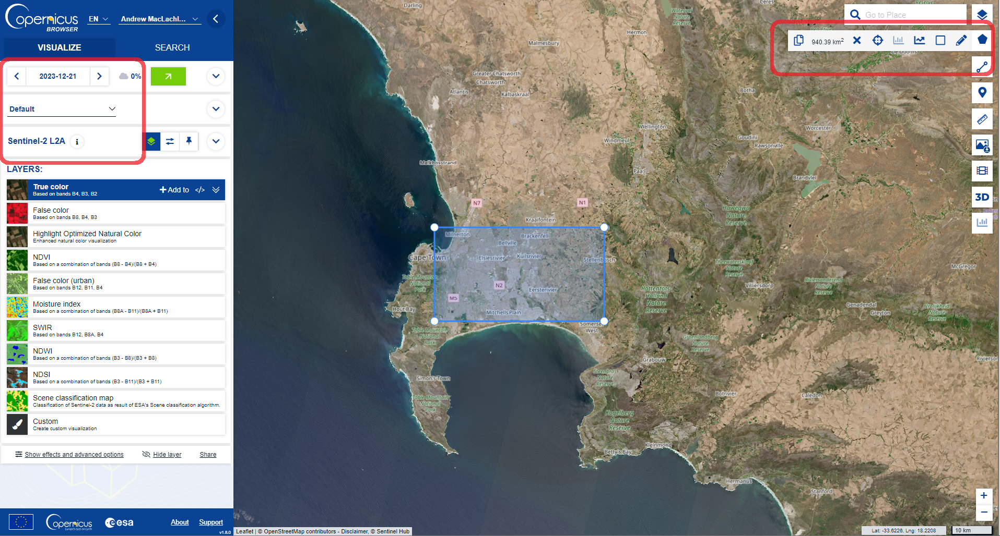
-
Here I have:
- Drawn around the study area using the tools on the right
- Selected the date box and reduced the cloud cover to 0%
- Selected Sentinel-2 L2A
At this point there are some pre-processed layers you can add to the map and explore (e.g. False color composite)
-
Now we can move to the SEARCH tab…
- Set the data source as Sentinel-2, MSI, L2A
- Set cloud cover as 0%
- Set a date range (my image is from the 15/5/2022)
- Search…
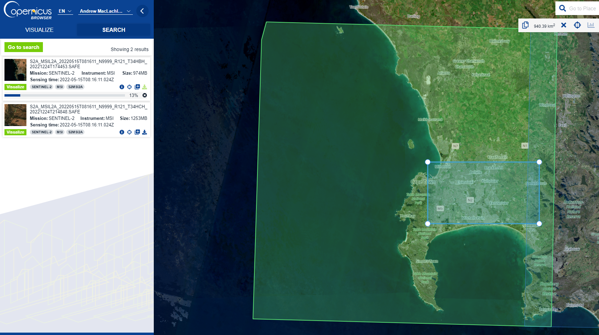
Images are distriubred as “tiles”, here you can visualise the tile you want and download it.
Sentinel product types refer to the amount of processing that has been undertaken on the multi-spectral imagery. Level 2A = Bottom of Atmosphere (BOA) or otherwise known as surface reflectance. Consult the product specification for more details. We cover different products (e.g. BOA or Top of Atmosphere, TOA) in future sessions.
You can also use the Sentinel 2 toolbox to replicate the conversation from TOA to BOA
If you see sentinel 2A or 2B theses are the same sensors but they operate at 180 degrees from each other reducing the revisit time from 10 to 5 days. 2A was launched first in 2015 followed by 2B in 2017.
1.4.1.1 Open
Once downloaded and unzipped you’ll be presented with a load of folders! Here we are interested in the 10m bands…which are:

You’ll find then in the GRANULE > sensor number > IMG_DATA > R10.
Next open them up in QGIS for some exploration, if there is a TCI image this is a True Colour Image of B02 (Blue), B03 (Green), and B04 (Red) Bands - open this first, it’s just a single raster layer. See the Sentinel user guide definitions for any other acronyms you might need.

Using the Identify tool we can create a spectral signature by changing the view option to graph (look under the graph in the image above).
However the TCI values are coded between 0 and 255 which will limit what we can do with it. As the the radiometric resolution of Sentinel-2 is 12-bit, meaning brightness levels from 0 - 4095 it’s not clear how this product has been made.
So we can make our own raster stack using the BOA bands, if you recall we did this in CASA0005 in R.
But in QGIS it’s easier to visualise the output
First load the four 10M bands from the same folder e.g…T34HBH_20220515T081611_B02_10m
Find the merge tool from the Raster miscellaneous tool box and select the following:

Note:
- The input layers are the four 10m optical bands (not the AOT band) that I loaded into QGIS. AOT is Aerosol Optical Thickness.
- Tick the box to place each raster file will be it’s own band
- The file being saved into a
.tiffas opposed to memory
Once merged we can created a true colour composite using the BOA data…to do so:
- Right click on the merged layer in the attribute table
- Symbology > Render type > select multiband color
In remote sensing the Red, Green, Blue display options are often called colour guns that are used to display images on the screen. For a true colour composite B1=Blue, B2=Green, B3=Red.

Try changing the contrast enhancement and see what happens, then consult GIS stack exchange to understand what is happening..
Of course we have only used the 10m bands so far…there are two options that we can take to use the full range of spectral data:
- Downscale the other bands to 10m forming a super-resolution
- Upscale the 10m to 20m
Down scaling is quite an intensive process and beyond the scope of this practical. However, it can be achieved using Sen2Res that is another plug in for the SNAP toolbox. Arguably SNAP is just a difference type of GIS software specific to Sentinel, but we will explore it later as it makes some of these concepts easier to understand.
Upscaling aggregates the images to a more coarse resolution (e.g. 10m to 20m). The Sentinel user guide states that bands will be resampled and provided (e.g. within the 20m folder there are 10 bands). However, it’s not clear what method has been used, the documentation suggests nearest neighbour.
This can also be termed resampling, and nearest neighbour simply means taking the new raster resolution and then assigning the value from the closest value in the original data. You might recall from CASA0005 there are different ways to define this, for example is nearest neighbour based on the distance from the center of a cell or the majority of cells, the latter would be termed majority rule.
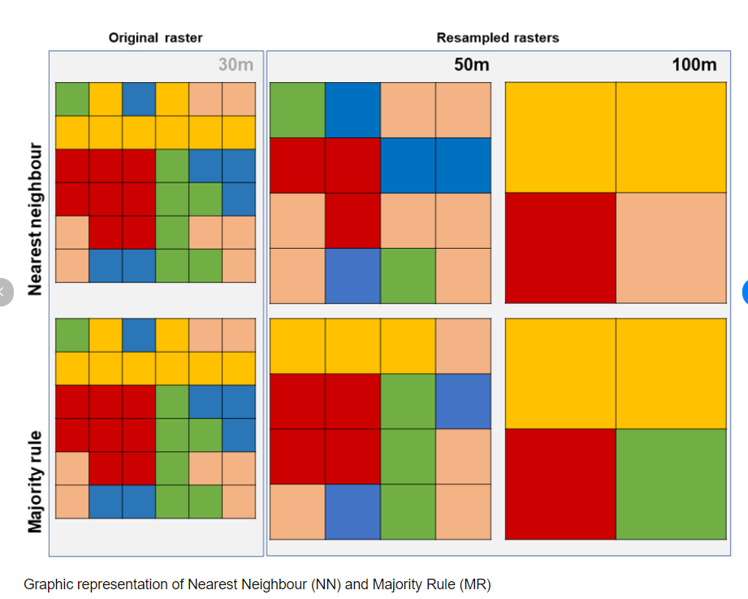
Others approaches include bilinear or cubic convolution resampling. See stack exchange for a worked example.
1.4.1.2 SNAP
SNAP stands for Sentinels Application Platform it is a collection of toolboxes specifically for pre-processing and analysing remotely sensed data.
Download the all toolboxes version
SNAP allows us to easily do undertake many GIS raster type analysis that we’ve seen / discussed in other modules (like CASA0005) and that we will come across within this module including:
- re sampling raster data
- re projecting
- masking
- classifying data
- principal component analysis
- orthorectification
- many more methods!
Aside from these methods in a GUI the real benefit is that it’s made to use remotely sensed data. Let’s explore some features of SNAP.
1.4.1.2.1 Load data
File > Open Product > select the .zip that was downloaded. Do not rename it or unzip it before hand!
In the side bar under Product Explorer there will be a lot on data that you can load. The remotely sensed data in under Bands and then each band is listed (e.g. B1 443nm). What does 443nm mean?
Double right click on a layer and it will appear in the viewer area
1.4.1.2.2 SNAP layout
The layout of SNAP isn’t too different to QGIS, we have:
- Products on the left side bar
- Map info in the bottom left
- additional panes of info can be added through view >toolbar windows
- note i have added pixel info (updates when moving the cursor) and world map
- Layer / mask managers in the right sidebar
- Processing tools in the top tool bars
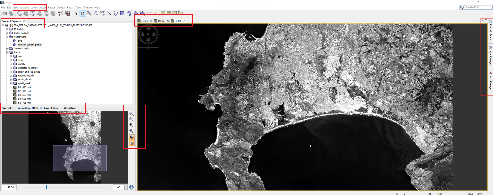
Here, i have also the two link buttons selected (bottom left window) these mean that if i move to another band i will still be in the same position on the image.
1.4.1.2.3 Colour composites
To re-created a true colour composite, right click on the data product and open RGB image
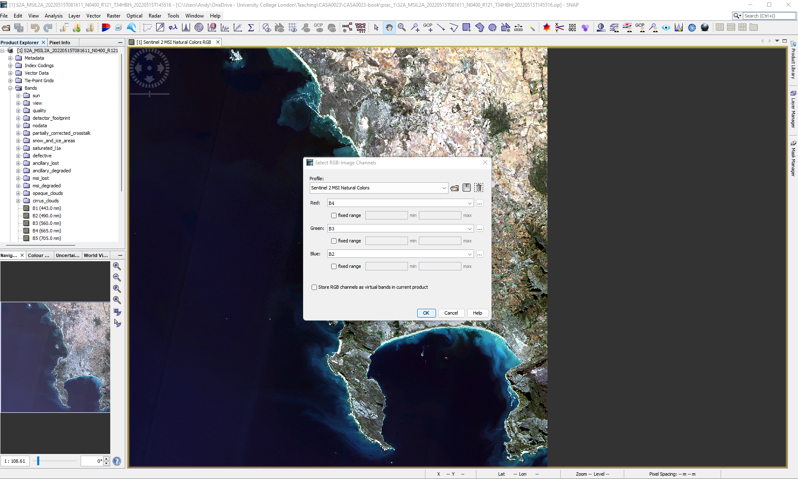
There are a variety of other band combinations that we can use to show certain aspects of Earth’s surface based on the absorption and reflection properties of the materials in the wavelengths of the bands we display “through the colour guns”, for example:
The false colour composite: B8, B4, B3. Plants reflect near-infrared and green light whilst absorbing red….
Atmospheric penetration composite: B12, B11, B8A with no visible bands to penetrate atmospheric particles. Vegetation = blue, urban area = white, gray cyan or purple.
The short-wave infrared composite: B12, B8A and B4 shows vegetation in green, the darker the greener the denser it is and brown shows built up or bare soil
For other band colour combinations consult gisgeogrpahy
1.4.1.2.4 Creating a session
Before we go any further we should save our session, this is the collection of all products and image views open in the Sentinel Toolbox, including any layers added to a view. Go File > Session > Save Session As.
1.4.1.2.5 Image statistics
1.4.1.2.6 Image histogram
When we open an RGB image in SNAP the histogram is clipped by 1% at the lower end and 4% at the upper end and then mapped in bins between 0 and 255 for display. A computer screen in full RGB displays colours between 0 and 255, hence why this is done.
This is similar to the contrast enhancement we saw in QGIS and we can manually change it here again through View > Tool Windows > Colour Manipulation.
Changing the distribution displayed will impact the colour of the image - try using the sliders or selecting 95% and 100% of all pixels to display. To reset click the back arrow button.
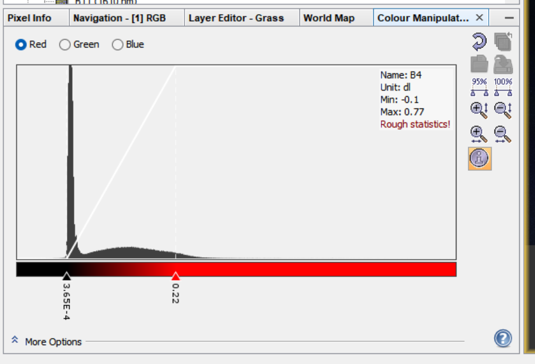
1.4.1.2.6.1 Scatterplots
Under the analysis button there are a variety of tools we can use to explore some image statistics….for example, here i have created a scatter plot of band 4 (x axis) and band 8 ( y axis). These bands are the red (vegetation absorbs) and Near-infrared (NIR, that vegetation strongly reflects)…so where we have high values of NIR and low values of red the plot represents dense vegetation whilst low values of both red and NIR are usually wet bare soil. you need to click the refresh button to generate the plot.


In remote sensing this can be called “spectral feature space”, more on this later in the term. You might see the software ENVI in the source above - ENVI is propriety software that is similar to SNAP.
1.4.1.2.6.2 Tasseled Caps
The output should look somewhat like a “Tasseled Cap” (a wizards hat at an angle), although this is different to the tasseled cap transformation which was proposed by Kauth and Thomas (1976). The tasseled cap transformation was originally applied to Landsat data being composed of brightness, greeness, yellow stuff (yes!) and none-such. It was then modified in 1968 to brightness, greeness and wetness. This can can useful for identifying urban areas, they are usually bright (although Andy will have more to say on this), high biomass will show in the greeness and moisture in the wetness. The tasseled cap comes from the plot between brightness on the x axis and greenness on the y axis.
Traditionally this is usually only applied to Landsat data, however if our bands in other sensors (like Sentinel) cover the same wavelengths we can apply it… \[ \begin{split} Brightness = 0.3037(B2)+0.2793(B3)+\\0.4743(B4)+0.5585(B8)+\\ 0.5082(B11)+0.1863(B12) \end{split} \] \[ \begin{split} Greeness = −0.2848(B2)−0.2435(B3)\\−0.5436(B4)+0.7243(B8)+\\ 0.0840(B11)−0.1800(B12)\end{split} \]
\[ \begin{split} Wetness = 0.1509(B2)+0.1973(B3)\\+0.3279(B4)+0.3406(B8)\\− 0.7112(B11)−0.4572(B12) \end{split} \]
Now, this is fairly straight forward to do in SNAP (or R) using Band Maths (Raster > Band Maths) and then clicking edit expression, before we can apply this we have two problems:
B11 and B12 are at a 20 meter resolution where as all the others at a 10 meter resolution, to fix this we must re-sample to 20m
Using the image provided will mean that the entire tile is computed when we really only care about our study area
Note, that there are many spatial indexes that can be applied to remotely sensed data, the Index DataBase holds them all or Chapter 8, pages 325 from Jensen is a good place to start.
1.4.1.2.7 Masking and resampling
This is sometimes also called clipping in CASA0005 we saw cropping (to the extent of a polygon) and then masking. Here I am only interested in a study area of the City of Cape Town District Municipality, which is in the gadm40_ZAF_2 from the GADM data, it also appears in the gadm40_ZAF_3 data too!
Explore the GADM data in QGIS to work out what spatial aggregation you can use to mask your study area. For the sake of this example you might want to use the smallest spatial unit, GADM level 4, which for South Africa is wards.
SNAP only permits ESRI shapefile to be loaded! To do so you must select the product on interest in the product explorer > Vector > Import > ESRI Shapefile
When you load the vector file it will appear under the image product that you had selected. To show it on the map, move to the right of the screen > select layer manager > check the layer you want to show.
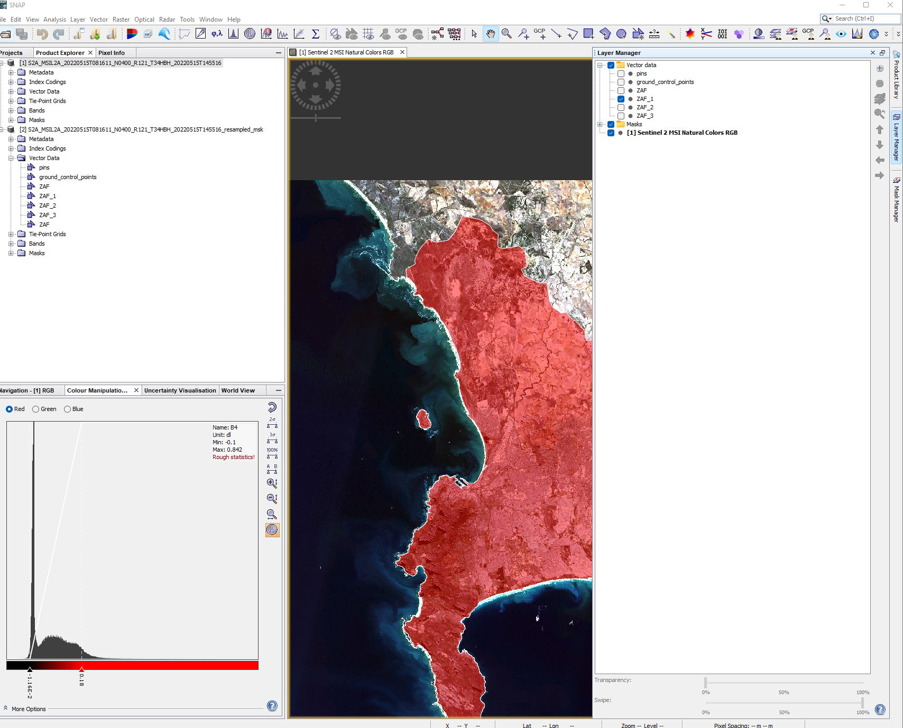
When you open a Shapefile in SNAP each polygon within your current extent will be made into an individual feature, opening the feature (from the Vector Data folder) will open the attribute table for the row of that polygon. You also might notice that the shapefile may have a larger extent than the image, this means we’d need to find another image and “mosaic” (merge or join together) them but we will see this later in the module, for now just accept that some area might be missing.
In my case the City of Capetown has been called ZAF_1 and now i will clip the raster to the polygon. However, the problem here is that we can only mask bands on the same spatial resolution, so we need to re sample bands 2,3,4 and 8 to 20m…here, we can use the Sentinel 2 resampling toolbox to resample the image and then move to masking it.
There are two options to resample within SNAP, a traditional resample which just considers the neighbouring pixels or the Sentinel 2 products resample to account for the particularities of the angle (satellite viewing) bands. For the sake of time we will use the traditional resample to generate a 20m raster dataset…Raster > Geometric > Resampling…
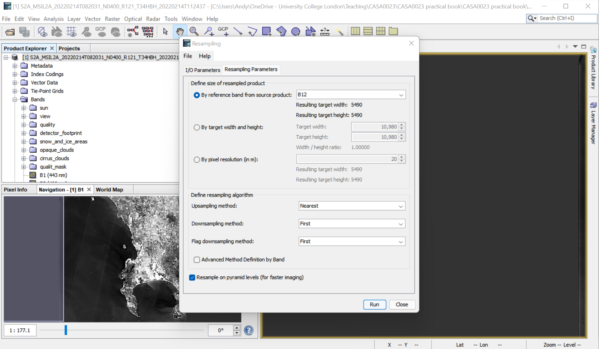
Note that there will be both upsampling and downsampling here as i’ve selected a 20m output.
This will create a new product in the product explorer so make sure you use that from now we, next we can mask out the all the bands we need:
To mask out our study area use the Land/Sea mask (Raster > Masks > Land/Sea mask) and select the vector to use as the mask. Here, i only take forward the bands i need (scroll up to check):
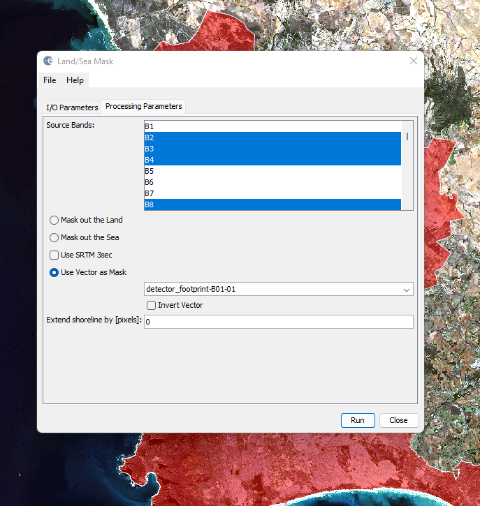
At this stage you may want to remove the shapefile that will still be within the new product created. Under the vector folder remove the relevant polygons.
Then compute the tasseled cap transformation (Raster > Band Maths) with the equations above. Note that when using a subtraction (-) you might get invalid expression so use the inbuilt subtraction within the edit expression button. My brightness equation was:
(0.3037* $3.B2) + (0.2793 * $3.B3) + (0.4743 * $3.B4) + (0.5585 * $3.B8) + (0.5082 * 0.5082) + (0.1863 * 0.1863)The new layers we’ve created will be added to the bands folder of the product you had selected (remember that we can only do this with bands that have the same resolution, hence our up and down sampling). We can now display the bands through the colour guns, R: Brightness, G: Greeness, B: Wetness and also create a scatter plot between Greeness (y) and Brightness (x) like we did earlier.
At this stage it is useful to also have open a true colour composite to compare to our tasseled cap transformation RBG image…what do the values and colours show? The Tasseled Cap function from ArcPro will help explain this further.
The data we have created show:
- Brightness, associated with spectral bands that show bare soil, man made surfaces or bight materials
- Greenness, associated with green vegetation
- Wetness, associated with moisture
The article states that the Tasseled Cap function is a form or Principal Component Analysis (PCA), covered more next week. This means that we have transformed our original data into a new data set that has reduced the dimensionality. PCA reduces the size of data (dimensions) whilst maximising the variance, there are specific tools for PCA so arguably this isn’t PCA as such. I would term this a spectral index which is a combination of two or more bands to highlight certain features of an image. There are many different spectral indexes that can be implemented - see the Index DataBase holds them all or Chapter 8, pages 325 from Jensen. There are specific urban spectral indexes such as the The Normalized Difference Built-up Index (NDBI).
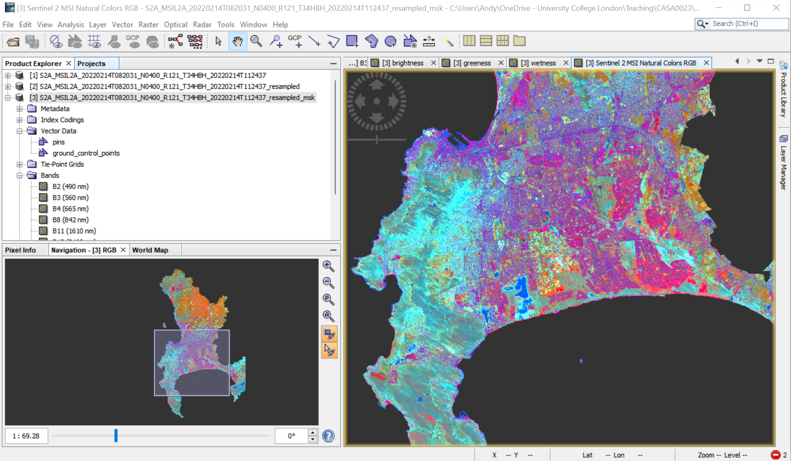
1.4.2 Landsat
Landsat imagery is the longest free temporal image repository of consistent medium resolution data. It collects data at each point on Earth each every 16 days (temporal resolution) in a raster grid composed of 30 by 30 m cells (spatial resolution). Geographical analysis and concepts are becoming ever more entwined with remote sensing and Earth observation.
To access the Landsat data we will use in this practical you can need to sign up for a free account at: https://earthexplorer.usgs.gov/.
To download the data:
- Enter your city in the address/place box > select the country > click Show and then click on the word of your city in the box that appears.
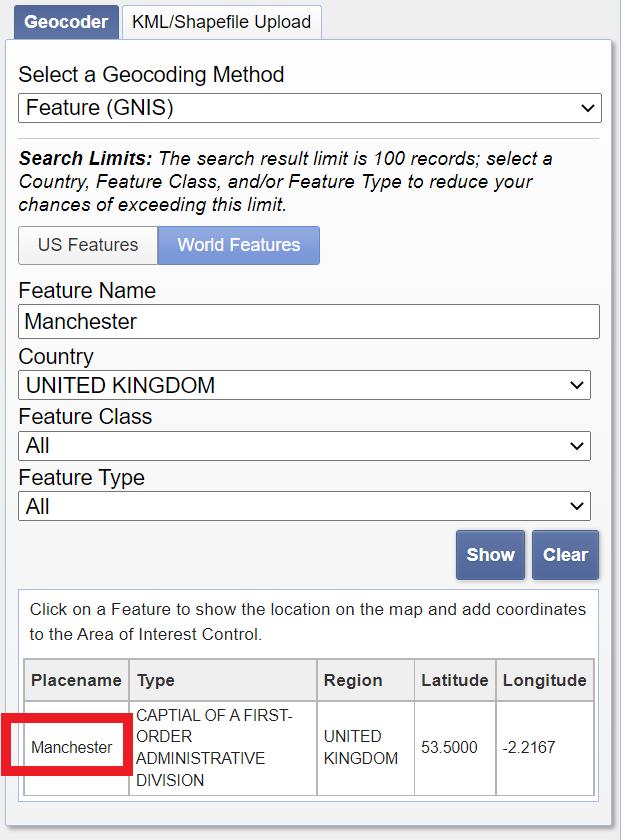
Set the search range to similar dates that you used for the Sentinel data, in my case 05/01/2022 to 05/31/2022
On the cloud cover tab set the filter to between 0 and 5% (or up to 10% if needed)
Click Data Sets and select Landsat Collection 2 Level 2 > Landsat 8-9 OLI/TIRS C2 L2 (more on what this means next week)
Click results, my image is: LC09_L2SP_175083_20220509_20220511_02_T1. Download the complete bundle.
Once downloaded unzip the file.
In SNAP go File > Open Product, navigate to the file ending with MTL and open it. This might look like a text file in your file explorer (e.g. MTL.txt). The product should appear. This is a real benefit of SNAP, having data from multiple sensors in the same software that can be explored together - when you move around on the Landsat image then the Sentinel image will also move to the same location.
To see the bands (or RGB images) side by side use the window dividers in the top right and also ensure the views are linked in the bottom left window.
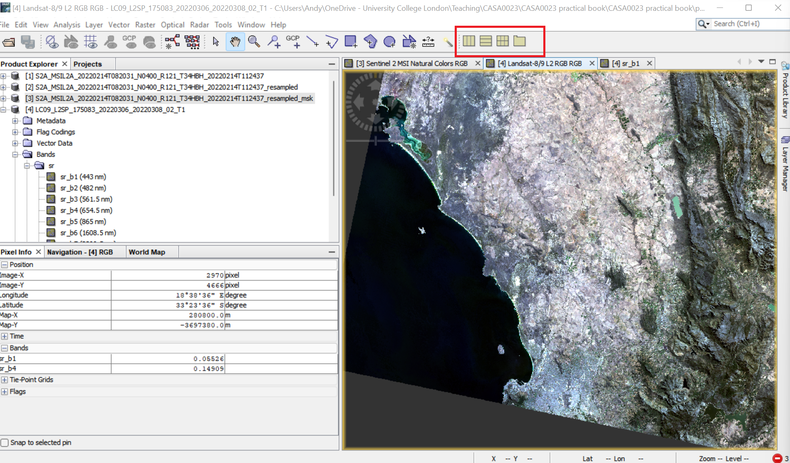
For the next part of the practical we will compare the spectral signatures from both Sentinel and Landsat. To do so we need to generate a series of points of interest (called POIs) that are coincident in both images. First we need to do two things:
- Clip all the spectral data from the Sentinel image to the vector outline
- we will need to resample the Sentinel data to the same pixel size so consider what you want to do here
- upscale or downscale ?
- What bands over Sentinel and Landsat actually overlap, do you need all of them
- what resolution is useful
- we will need to resample the Sentinel data to the same pixel size so consider what you want to do here
- Clip the Landsat image to the same vector outline as the Sentinel image, during the mask you can select the bands to mask and output
Once you have completed these steps you output should look something like this, however, note that my Landsat tile is a different extent to my Sentinel tile, we cover this later in the module.

1.4.2.1 Select POIs
To create points of interest we want select pixels representative of certain land cover types (e.g. Bare earth, water, grass, forest, urban) so we can compare them from both Landsat and Sentinel. Of course the pixels need to be present in both datasets.
We can select pixels through QGIS, R or SNAP. I’ll focus on the latter here.
Make a new vector data container for a land cover type (Vector > New Vector Data Container). Note that it will be created within the data product that is selected. Next click the square icon with a plus to add vectors. Once finished repeat the process of adding a new vector data container for the next land cover type.
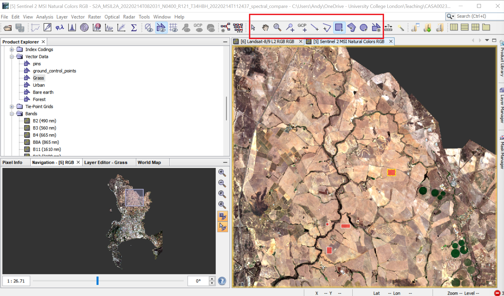
- Next use a drawing tool to draw around areas of land cover, when you select the drawing tool you will be asked which landcover the polygon is for, make sure the area is in both imagery - switch between them as we have done or display them side by side. Whilst doing this it is useful to have the spectrum view open (View > Tool Windows > Optical >Spectrum Viewer:
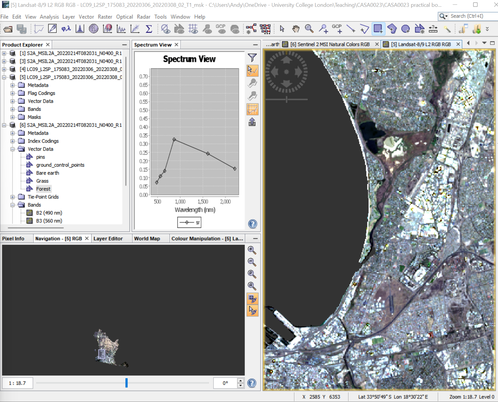
Once done create another vector data container and repeat for the next land cover type.
Consider have a separate class for highly reflective urban (e.g. industrial areas)
1.4.3 Spectral signatures
To compare out spectral signatures we have a few options
- right click on the image in SNAP and then export mask pixels as a
.txt, but you will need to do this for each land cover class and for each image (Sentinel and Landsat).
or
- export the imagery (to Geotiff) and vector files (to shapefiles) and then subset in R
I will do the second option here:
Right clicking on the vector containers will allow export to shapefile - do this for all the land covers you have
To export the “product” which is what your image will be un SNAP. Select it (just click it) then go File > Export > GeoTIFF. When exporting the Landsat data click the subset button in the save box > band subset (select only spectral bands) and then metadata subset and remove all the selection.
Open the GeoTIFFS and shapefiles in QGIS to check everything.This is another good opportunity to understand how contrast enhancement works - in QGIS > Symbology > expand min / max and then change the cumulative count cut the value for each band will change. For Landsat B3 is red, B2 is green and B1 is blue. This does not change the values of the pixels, just how they are displayed on a colour screen.
1.4.4 Using R
Remember that before we deal with large data sets in R, we must sort out the .gitignore file, if we intend to use Git and GitHub at any stage (hint: you will for the assessment). Go back to CASA0005 to remember how if you need to
Raster packages in R have and are still evolving rapidly, we have probably seen and used the raster package and may have seen the terra or stars packages. All can handle raster data and do the same analysis (pretty much).
In 2023 some key packages will retire like maptools, rgdal and rgeos as their maintainer, Roger Bivand will retire. raster uses sp objects for vector data and also the rgdal package - the Geospatial Data Abstraction Library (GDAL) for reading, writing and converting between spatial formats. sp (that we saw in CASA0005) also uses rgdal and suggests rgeos.
The terra package (2020) is somewhat mixed with raster, however the retiring packages are only needed by raster, with the terra package replacing raster. Terra is much faster than raster as datasets that can’t be loaded into RAM are stored on disc and when loaded doesn’t read the values. Then when computations occur the do so in chunks. Terra is very well documented and the functions are very similar to raster - https://rspatial.org/terra/pkg/index.html
The stars package (2018) works with sf!!, this means many of the functions we’ve seen and are familiar with it will work - e.g. st_transform() which is much easier than doing it in raster. The real benefit of stars is its ability to handle large data (like satellite data) that can’t fit into memory. It does this through not loading the pixel values but keeping a reference to them through a proxy and only loading / running computations when specifically needed (e.g. plotting, will only plot the pixels that can be seen)! The stars section from Spatial Data Science in Pebesma and Bivnad 2022 gives a good overview with examples
Stars is faster than terra, terra is faster than raster.
1.4.4.1 Data loading
Here i have chosen to use terra, this is because i want to extract the pixel values from within the polygons and at the moment stars will only permit aggregation - e.g. the mean of the pixels in the polygons. This is fine unless you want to explore the variation in signatures! then you will need the values.
To use a vector layer in terra it needs to be in a SpatVector (in terra the raster is a SpatRaster)…
urban <- vect(urban)Of course, we can just do this straight from loading the data with the pipe…
bare_earth <- st_read("prac_1/Data/Bare_earth_Polygon.shp") %>%
vect()
grass <- st_read("prac_1/Data/Grass_Polygon.shp")%>%
vect()
forest <- st_read("prac_1/Data/Forest_Polygon.shp")%>%
vect()
urban <- st_read("prac_1/Data/Low_urban_Polygon.shp")%>%
vect()
high_urban <- st_read("prac_1/Data/High_urban_Polygon.shp")%>%
vect()Before we can start the extraction you might have seen that my Landsat data is not in the same CRS as the rest of the data, it’s close, but different. We can also just use the raster to get the CRS info, like
Now let’s pull out those values, and get the mean and standard deviation, starting with urban from sentinel data…
library(tidyverse)
# extract the values from sentinel for urban landcover
sen_urban<- terra::extract(sentinel, urban, progress = F)%>%
# make to tibble
as_tibble()%>%
# columns are bands so pivot all the bands (2 to 7) longer
# giving a column of band number and another of band values
pivot_longer(cols = 2:7,
names_to="bands",
values_to="band_values")%>%
# add a column to identify this as sentinel
add_column(sensor="sentinel")%>%
# add column to identify as urban
add_column(land="urban")Now, because this process will be the same for the other landcover types we can make a function…this is the exact same code as above but i’ve replaced two arguments with sensor and land cover that i can now change for each version (e.g. bare earth in Landsat or forest in Sentinel).
Below i have used substitue() and deparse() this is because when i provide the sensor to the function is must be a character type (e.g. "sentinel" not just sentinel).
substitue()gives an expression, in this case it looks the same assentineldeparse()turns this into a character vector - which is what we need.
band_fun <- function(sensor, landcover) {
col_sensor <- deparse(substitute(sensor))
col_land <- deparse(substitute(landcover))
sen_urban<- terra::extract(sensor, landcover, progress = F)%>%
as_tibble()%>%
pivot_longer(cols = 2:7,
names_to="bands",
values_to="band_values")%>%
add_column(sensor=col_sensor)%>%
add_column(land=col_land)
}Later on we will also create a density plot, so let’s write a function for all the values…it’s very similar…we will call this one when we need it later…
band_fun_all_values <- function(sensor, landcover) {
col_sensor <- deparse(substitute(sensor))
col_land <- deparse(substitute(landcover))
sen_urban<- terra::extract(sensor, landcover, progress = F)%>%
as_tibble()%>%
pivot_longer(cols = 2:7,
names_to="bands",
values_to="band_values")
}Then it’s simply…
sen_bare <- band_fun(sentinel, bare_earth)
sen_grass<- band_fun(sentinel, grass)
sen_forest<- band_fun(sentinel, forest)
sen_high_urban <- band_fun(sentinel, high_urban)
lsat_urban<- band_fun(landsat, urban)
lsat_bare<- band_fun(landsat, bare_earth)
lsat_grass<- band_fun(landsat, grass)
lsat_forest<- band_fun(landsat, forest)
lsat_high_urban <- band_fun(sentinel, high_urban) Think about what this has given us?
The next stage is to put then into a tibble…
sen_lsat <- bind_rows(sen_urban, sen_bare, sen_grass,
sen_forest, sen_high_urban,
lsat_urban, lsat_bare, lsat_grass,
lsat_forest, lsat_high_urban)Now, get the mean (and standard deviation) values for each band per sensor and land cover type:
Plot some spectral profiles, first for Sentinel…
p1 <- means %>%
filter(sensor=="sentinel") %>%
ggplot(., aes(x = bands, y = Mean,
col=land))+
geom_point()+
geom_line(aes(group = land)) +
geom_errorbar(aes(ymin = (Mean-Std), ymax = (Mean+Std), width = 0.2))
p1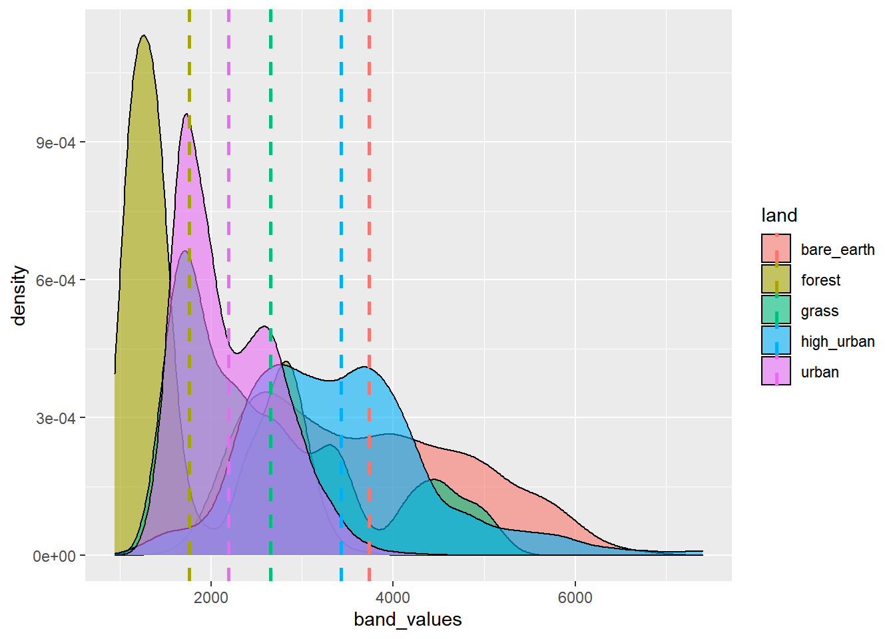
We can also look at a density plot which is a continuous and smoothed histogram allowing multiple histograms to be plotted over each other ….More specifically this uses kernel density estimation to draw a curve at each point, with all the curves then joined up.
p2 <- sen_lsat %>%
filter(sensor=="sentinel") %>%
ggplot(., aes(x=band_values, group=land, fill=land)) +
geom_density(alpha = 0.6)+
#Add a mean vertical line
geom_vline(data = . %>% group_by(land) %>% summarise(group_mean = mean(band_values)),
aes(xintercept=group_mean, color = land), linetype="dashed", size=1)Warning: Using `size` aesthetic for lines was deprecated in ggplot2 3.4.0.
ℹ Please use `linewidth` instead.p2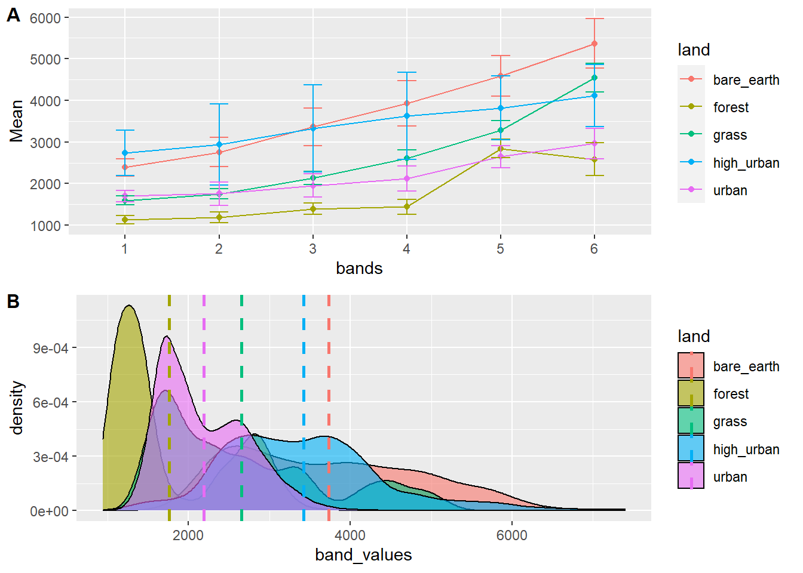
Remember this mean vertical line is for all values per land cover, it’s not band specific.
Andy will talk about these outputs.
We can arrange our grids nicely with the cowplot package…
Attaching package: 'cowplot'The following object is masked from 'package:lubridate':
stamp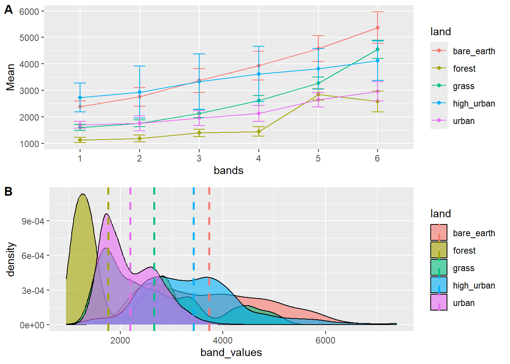
We can also export this if we wanted with ggsave() to,ggsave has a lot of options and can output to most formats, it also gives examples of not using ggsave
ggsave("spectral_reflectance.pdf", width = 20, height = 20, units = "cm")Here, i have just shown the process for Sentinel data. Your could do similar analysis of the Landsat data / some comparisons…perhaps even a statistical test (e.g. a t-test) to compare the difference between the reflectance of Landsat and Sentinel data e.g..
t1<- sen_lsat %>%
filter(sensor=="sentinel" & land =="urban")%>%
select(band_values)%>%
pull()
t2<- sen_lsat %>%
filter(sensor=="landsat" & land =="urban")%>%
select(band_values)%>%
pull()
t.test(t1, t2)
Welch Two Sample t-test
data: t1 and t2
t = -355.74, df = 5970.1, p-value < 2.2e-16
alternative hypothesis: true difference in means is not equal to 0
95 percent confidence interval:
-9300.307 -9198.368
sample estimates:
mean of x mean of y
2190.602 11439.939 How do we interpret this?
If you make plots of reflectance be careful to use the same scale, you can do this by adding a new line under ggplot like:lims(y = c(0, 80000))
1.5 Learning diary
Consult the assignment requirements document and complete your learning diary entry. We cover the tools to make the online learning diary next week, so in this week use a word editor, or markdown document and then add your content to your online diary next week.
1.6 Feedback
Was anything that we explained unclear this week or was something really clear…let us know using the feedback form. It’s anonymous and we’ll use the responses to clear any issues up in the future / adapt the material.